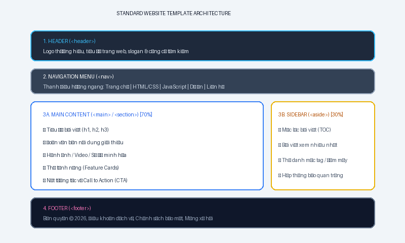
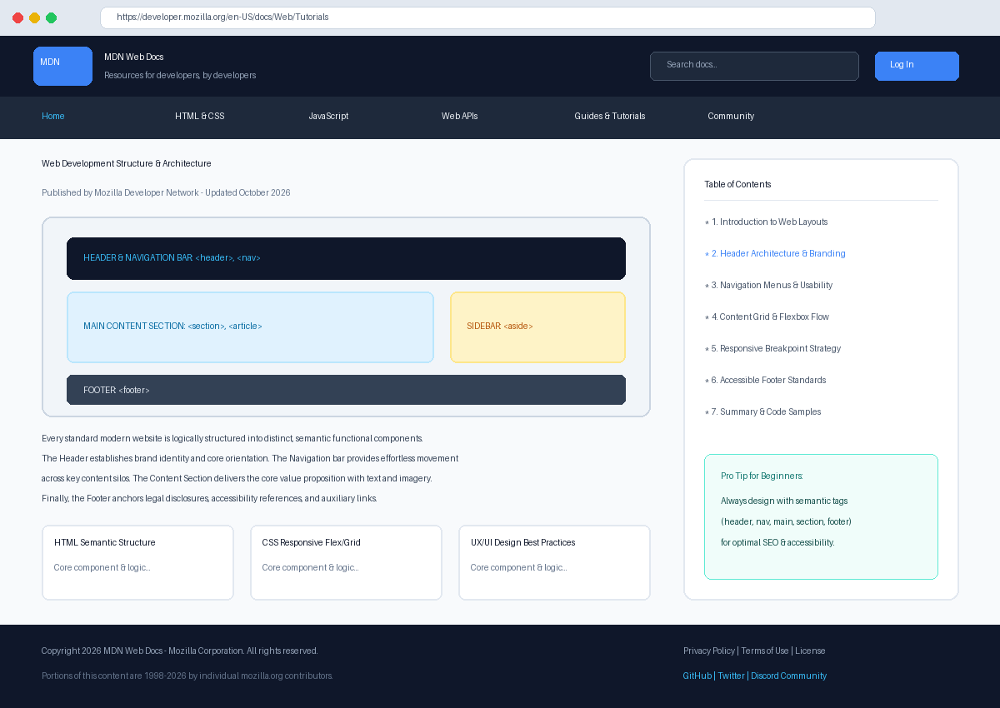

Phân Tích Cấu Trúc Bố Cục Trang Web Thực Tế
Trong bài tập này, chúng ta tiến hành khảo sát và phân tích cấu trúc trang web tài liệu lập trình tiêu chuẩn MDN Web Docs (developer.mozilla.org). Đây là một trong những website có cấu trúc chuẩn mực nhất thế giới, được chia thành 4 khối chức năng rõ ràng giúp tối ưu trải nghiệm đọc (UX), điều hướng linh hoạt và chuẩn SEO.

1. Header (Đầu trang)
Đặt ở trên cùng trang web, chiếm trọn 100% bề ngang. Chứa nhận diện thương hiệu (Logo, tiêu đề trang) và công cụ tìm kiếm nhanh. Giúp người dùng xác định ngay lập tức trang web họ đang truy cập là gì.
2. Navigation Menu (Thanh điều hướng)
Nằm ngay dưới Header, được ghim cố định (Sticky) khi cuộn chuột. Chứa 6 liên kết điều hướng cấp 1 (Trang chủ, HTML/CSS, JavaScript, Tài liệu, Cộng đồng, Liên hệ) với hiệu ứng gạch chân khi hover.
3. Content Section (Nội dung chính)
Chia thành 2 cột bất đối xứng bằng CSS Grid/Flexbox: Cột chính (70%) chứa tiêu đề, bài viết, hình ảnh minh họa và thẻ tóm tắt; Cột phụ (30%) chứa mục lục và các liên kết tham khảo nhanh.
4. Footer (Chân trang)
Nằm ở đáy trang với nền màu tối tương phản. Cung cấp thông tin bản quyền pháp lý, chính sách bảo mật, điều khoản sử dụng, tác giả thực hiện và liên kết mạng xã hội của cộng đồng.
Ảnh Chụp Màn Hình Trang Web Gốc Đã Phân Tích
Dưới đây là hình ảnh chụp giao diện thực tế của website MDN Web Docs thể hiện trực quan vị trí sắp xếp của Header, Navbar, Main Content và Footer:

Đánh Giá Ưu Điểm Của Bố Cục Này
• Tính khoa học: Phân cấp thị giác rõ ràng, mắt người dùng quét từ trên xuống dưới một cách tự nhiên.
• Dễ mở rộng: Khi cần thêm nội dung mới, cấu trúc thẻ (Card) và lưới (Grid) cho phép chèn linh hoạt mà không vỡ khung.
• Thân thiện di động: Trên màn hình nhỏ, hệ thống 2 cột tự động chuyển thành 1 cột dọc đơn giản, dễ đọc.